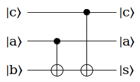

聊聊量子因式分解算法的实现
Ping Zhou, 2021-06-22
在前面的Shor算法系列中，我讨论了用量子计算进行因式分解的思路。但是这些基本上都是理论上的推导，实际要实现量子因式分解，有哪些难点？解决的思路又是什么？今天就来聊聊我的实现方法。
Shor算法实现的难点：指数取模
在Shor算法中，我们用量子计算来寻找函数 \(f(x)=a^x \mod N\) 的周期（order），并且这一步也是Shor算法中唯一的『量子』部分。

为什么Shor算法这么设计？因为“order finding”这一步目前还没有找到高效的经典算法，而量子计算机则可以用多项式代价求解。
问题来了，这个电路看起来也太『简单』了吧！这么难的一个问题，这样几个电路块就解决了？
实际上，为了方便讨论算法，上面的这个电路图作了大量的抽象，其中关键的一步，就是把函数 \(f(x)\) 包装成了一个计算『指数取模』的可逆变换 \(U_f\) 。有了这样一个可逆变换，我们才能给它输入 \(2^n\) 个基态的叠加态，实现对经典算法的指数级加速。
这个 \(U_f\) 变换有2个寄存器，分别都是n个量子位：
- 第一个是寄存器 \(|x\rangle\) ，就是要对a取的指数，
- 第二个是寄存器是辅助的 \(|1\rangle\) （注意，这也是个n量子位的寄存器）。
在另一端， \(U_f\) 输出 \(|x\rangle\) ，以及 \(|a^x \mod N\rangle\) 。
那这个『指数取模』可逆变换 \(U_f\) 怎么实现呢？
一个偷懒的方法是，用经典电路实现这样一个变换，把它接入到量子电路里。但是，我们给它的输入是 \(2^n\) 个基态的叠加态，而这个经典电路一次只能计算一个f(x)值，遇到这种叠加态的输入就傻眼了：这不还是 \(O(2^n)\) 的时间复杂度么？运行这样的电路，等于只是用经典电路模拟了Shor算法而已。
所以，这个『指数取模』可逆变换 \(U_f\) 必须是『量子』的，不能用经典电路来实现。这也是Shor算法实现中的一个主要的挑战和难点。
接下来，我会用自顶向下的方式，逐个分解讨论。
量子指数取模
这个『量子指数取模』变换的实现，其实方法不止一种，这里结合我对相关论文的理解，提出我的一个实现方法。
首先， \(a^x \mod N\) 里面，N是给定的数，a是每次运行电路前随机选定的一个数，所以运行时候也是已知的，这两个都可以看作是已知的常量。
然后，变量x是n位二进制数，而我们知道n位二进制数可以表示成这样的形式：
\begin{matrix} x = \left( x_{n-1} x_{n-2} \dots x_0 \right)_2 \\ = x_{n-1}2^{n-1} + x_{n-2}2^{n-2} \dots x_02^0 \\ \end{matrix}其中的 \(x_{n-1}, x_{n-2}, \dots x_0\) 都是0或1。因为x是用在a的指数上， \(a^x \mod N\) 也可以写成：
\begin{matrix} a^x \mod N = a^{ x_{n-1}2^{n-1} + x_{n-2}2^{n-2} \dots x_02^0} \mod N\\ = \left( a^{x_{n-1}2^{n-1}} \mod N \right) \\ \left( a^{x_{n-2}2^{n-2}} \mod N \right) \\ \dots \\ \left( a^{x_02^0} \mod N \right) \end{matrix}这里用到了乘积取模的性质： \(ab \mod N = (a \mod N)(b \mod N)\)
这样，『指数取模』 \(a^x \mod N\) 可以分解成n个项的『乘积取模』变换。每个项里面， \(a^{x_k2^k}\) 其实就两种可能：如果第k位 \(x_k\) 是0，那么这一项就是1，否则这一项就是 \(a^{2^k}\) 。那么这n项相乘，用程序语言来描述的话就是这样的过程：
- 初始乘积B=1
- 扫描x的每一位：
- 如果第k位是0，那么B不变
- 如果第k位是1，那么给B乘上 \(a^{2^k}\) （注：这里是取模的乘法）
- 继续下一位
- 所有n位都扫描过，得到的B就是 \(a^x \mod N\)
我们可以用同样的思路，来实现这个『指数取模』变换！
首先，我们需要一个n位的辅助量子寄存器，把它初始化为 \(|1\rangle\) ，也就是上面的第1步。
然后，第2步需要根据x的每一位，选择性的给这个辅助寄存器作『乘积取模』运算。这一步怎么实现呢？
还记得我们之前经常用到的 CNOT『受控非门』吗？这个门除了正常的输入外，还有一个控制输入，只有当控制输入为 \(|1\rangle\) 的时候，才对输入取反，否则输入不变。
假设我们已经有了一个『乘积取模』的变换（后面会讨论），我们可以再给它加上一个类似CNOT的控制输入，把它变成『受控乘积取模』，也就是说只有当这个控制输入是 \(|1\rangle\) 的时候，才对输入作乘积取模，否则输入不变（相当于乘1）。这不就是上面第2步里所需要的？
而因为a是每次运行电路前选定的，也就是说a在这里是已知的，所以我们可以给x的每一位构造一个『受控乘积取模』变换V：
- 第0位，受控变换 \(V_0\) ，在控制输入是 \(|1\rangle\) 的时候，给输入乘上 \(a^{2^0}\) ，否则输入不变；
- 第1位，受控变换 \(V_1\) ，在控制输入是 \(|1\rangle\) 的时候，给输入乘上 \(a^{2^1}\) ，否则输入不变；
- …
- 第n-1位，受控变换 \(V_{n-1}\) ，在控制输入是 \(|1\rangle\) 的时候，给输入乘上 \(a^{2^{n-1}}\) ，否则输入不变。
把这些变换 \(V_0, V_1, \dots, V_{n-1}\) 接起来，就实现了上面的指数取模算法：

这里面，每一个V变换还带一个辅助量子寄存器（就是图中最下面一行，初始状态为 \(|0\rangle\) ）。 这是因为量子电路里的变换必须是可逆的，像这样的运算必须带相应的辅助寄存器来保证它的可逆性，在量子电路里这是常见的套路。这些变换一共有n个，可以在每次运行电路前，根据a的值构造好，然后放到电路里去。
有了这个总体电路，接下来我们看里面的『乘积取模』变换。
乘积取模
乘积取模，就是计算 \(ax \mod N\) （x是输入，a和N都是已知的数），这方面其实已经有不少论文讨论它的实现，例如 Vedral 等的 Quantum Networks for Elementary Arithmetic Operations 。考虑到篇幅，这里不做详细的展开了，总之我们可以从基本的量子电路门出发，构造这样一个『乘积取模』的变换 \(U_g\) ：
{kind=link}
但是，我们的指数取模电路，需要把多个乘积取模变换连接起来，上面这个 \(U_g\) 变换并不能直接用，不信你可以试试，把多个这样的变换接起来，会变成啥样 :-)
实际上，我们在指数取模电路里需要的『乘积取模』变换（也就是电路里的一堆V变换 ），是这样的：
例如第k位对应的V变换，就是给输入乘上 \(g=a^{2^k}\) （取模乘法）。
怎么把前面的这个『乘积取模』 \(U_g\) ，包装成我们要的样子 \(V_g\) 呢？
既然有了 \(U_g\) ，那自然有它的逆变换 \(U_k^{-1}\) ，简单画一下就知道，这个逆变换是这样子的：
{kind=link}
如果这个逆变换里的k，取值 \(k=g^{-1} \mod N\) ，然后把它和 \(U_g\) ，中间用一个SWAP门连起来，会得到什么？
在最后这个逆变换 \(U_k^{-1}\) 里， \(k=g^{-1} \mod N\) ，第一个输入 \(|u\rangle = |gx\mod N\rangle\) ，第二个输入 \(|x\rangle\) ，所以这个逆变换的两个输出，第一个还是 \(|u\rangle = |gx\mod N\rangle\) ，第二个是 \(|x-(ku \mod N)\rangle\) 。把 \(|u\rangle = |gx\mod N\rangle\) 和 \(k=g^{-1} \mod N\) 代入进去，第二个输出就变成了：
\begin{matrix} |x-(ku \mod N)\rangle = |x - (g^{-1}gx \mod N)\rangle \\ = |x - x \mod N\rangle = |0\rangle \end{matrix}所以这3个变换合起来，就是我们在指数取模电路里所需要的乘积取模 \(V_g\) ：
所以整个过程是这样：
- 在每次运行Shor算法前，我们需要随机选一个与N互质的数a；
- 根据这个a，计算g值： \(g_0=a^{2^0}, g_1=a^{2^1}, \dots, g_{n-1}=a^{2^{n-1}}\) ，一共需要计算n个；
- 对每个g值，构造相应的『受控乘积取模』变换，也就是 \(V_{g_0}, V_{g_1}, \dots, V_{g_{n-1}}\) ，一共也是n个；
- 给每个受控乘积变换，接上相应的控制输入，第k个就接x的第k位；
- 把这n个受控乘积变换连起来，两个输入分别初始化为 \(|1\rangle\) 和 \(|0\rangle\) ，那么在输出端就能得到所需的 \(a^x \mod N\) 结果。
量子加法器和乘法器
乘积取模变换，内部还可以分解成乘法和加法。这些也都可以用基本的量子电路门构造出来，例如量子加法器可以这么实现：

量子乘法器和加法器，很多论文和课本里也都有详细的讨论，这里就不重复了。
复杂度
简单聊一下这个电路的复杂度，我不是这方面的专家，只能大致估算一下，如有不对的地方请指教。
- 首先是需要多少量子位，这里用到了3个n位的寄存器，因此一共是3n个量子位。n的选择取决于要分解的数N，一般的规则是 \(N^2 \le 2^n \le 2N^2\) ，所以 \(n \sim O(\log N)\) ；
- 然后，我的实现里需要预先计算n个g值（ \(g_0=a^{2^0}, g_1=a^{2^1}, \dots, g_{n-1}=a^{2^{n-1}}\) ）；
- 还需要根据计算好的g值，构造相应的受控乘积取模变换，也是n个；
- 每个乘积取模变换操作2n个量子位，根据 Vedral 的论文，需要的量子电路门在 n 的多项式内。
综合起来，整个指数取模电路的复杂度也应在n的多项式内。
总算写完了，感谢阅读！